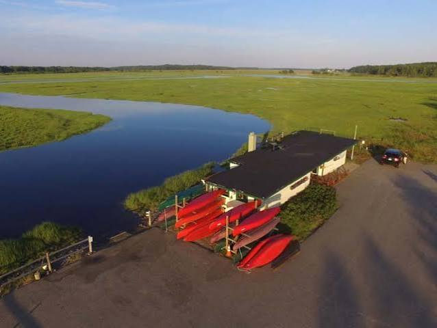
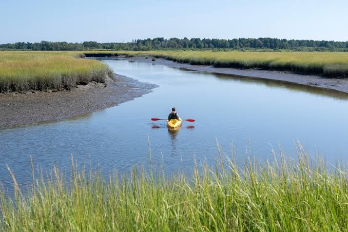
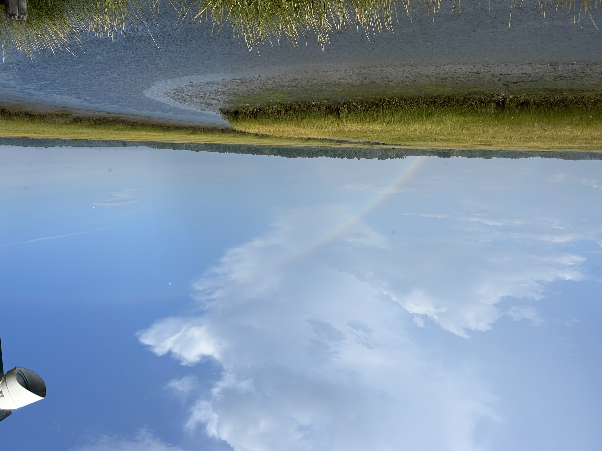

The Scarborough Marsh Audubon Center is open daily 9:00AM-5:30PM from Memoral Day weekend to Labor Day weekend.
Please note that boating is tide-dependant. Boats cannot access the river during low tide. You must plan to be back one hour before low tide at the latest or leave one hour after low tide at the earliest. To check the tides, you may check The US Harbor's Monthly Tide Chart and then add one hour to the listed high or low tide. This is becuase it takes one hour for the tide in the marsh to match up to the tide on the coast.
To rent from the Scarborough Marsh Audubon Center, go into the store and and speak to the store attendant. Inform them how many boats you would like to rent and how many adutls are in your party. The attendant will give you a waiver and copy of the boating rules. Once you have filled out the waiver and read the rules, the attendent will give you a quiz on the rules. You must pass the quiz in order to rent. Next, the attendant will take a set of car keys or something similar (ID, credit card, etc) as a deposit. They will give you a dry box for the party to put a phone in. Next, you will head outside where one of our outdoor attendants will gvie you your life jacket and paddle. They will show you a map of the marsh and give you directions on where to go and if there is anything to be aware of. Then, the outdoor attendants will get your boat ready and help you into the water. Once you have returned, the outdoor attendants will help you exit the boats and you will go back inside the center to retieve your deposit and provide payment for the rental.
| Boat | Boat Capacity | Price |
|---|---|---|
| Single Kayak | 1 person | $25/hr, $35/1.5 hrs, $45/2 hrs, $55 max |
| Double Kayak | 2 people | |
| Canoe | 3 adults OR 2 adults and 2 small children |
The pricing is the same regardless of boat type!
Renters will given a copy of the rules and quizzed before they are allowed to rent a boat.
 |
 |
 |